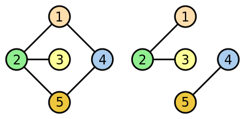
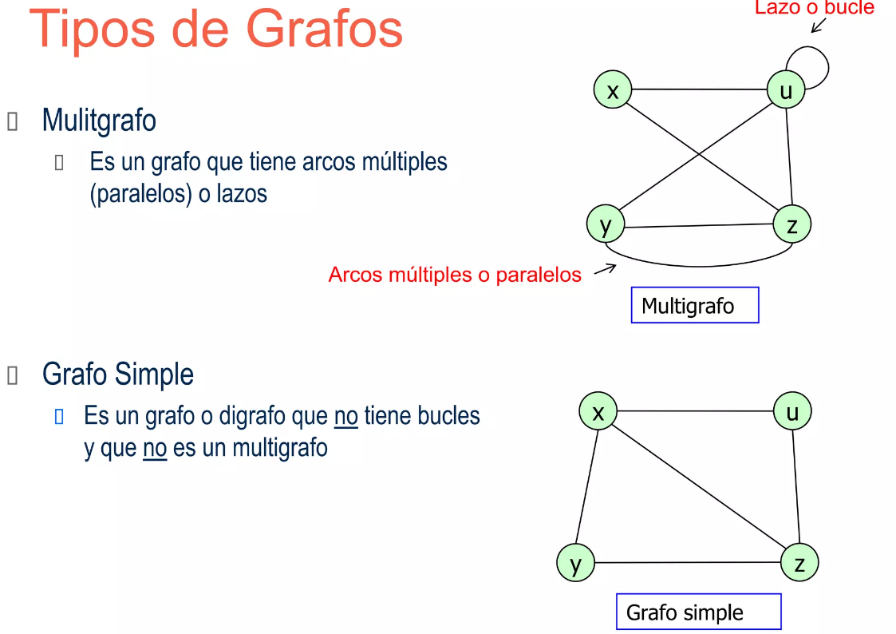

SEGUIR ESTUDIANDO...


Los grafos son estructuras matemáticas que representan relaciones entre objetos. Compuestos por nodos (vértices) y conexiones entre ellos (aristas), los grafos son herramientas fundamentales en teoría de grafos y se utilizan en una variedad de campos. A continuación, profundizaremos en los aspectos esenciales de los grafos, su estructura, aplicaciones y una breve exploración de su historia. 
Un grafo G se define como un par ordenado G = (V,E) , donde V es un conjunto de nodos y E es un conjunto de aristas que conectan los nodos. Los nodos pueden representar entidades, y las aristas, las relaciones entre ellas.
Grafo No Dirigido: Las aristas no tienen una dirección específica.
Grafo Dirigido (Digrafo): Cada arista tiene una dirección, apuntando de un nodo inicial a
un nodo final.
Grafo Ponderado: Cada arista tiene un peso o costo asociado.
Grafo Bipartito: Los nodos se pueden dividir en dos conjuntos, y las aristas solo conectan
nodos de conjuntos opuestos.
Grafo Cíclico y Acíclico: Puede contener o no ciclos (caminos cerrados).

Redes Sociales: Modelan conexiones entre usuarios.
Rutas y Redes de Transporte: Representan conexiones entre ubicaciones.
Redes de Computadoras: Describen la conectividad entre dispositivos.
Planificación de Proyectos: Modelan dependencias entre tareas.
La teoría de grafos se originó en el siglo XVIII con el famoso problema de los Puentes de
Königsberg, resuelto por Leonhard Euler en 1736. Euler demostró que no era posible caminar
por todos los puentes sin repetir ninguno, lo que condujo al desarrollo de la teoría de grafos.
A lo largo del tiempo, la teoría de grafos se ha expandido y ha encontrado aplicaciones en diversas
disciplinas, desde matemáticas puras hasta ciencias de la computación y más allá.